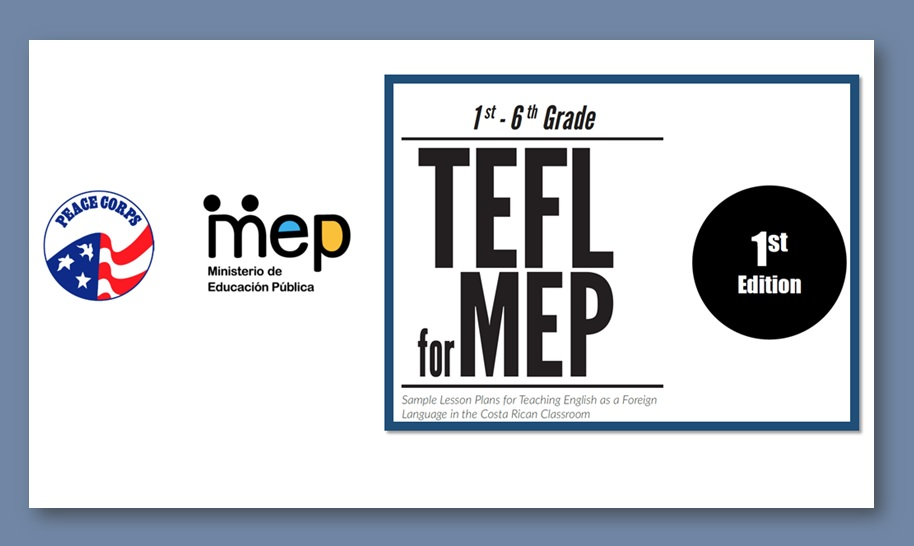

More resources
Videos

CR National Team Spreads the Word English Is Important!
Members of the Costa Rica National Team had some encouraging words for the champions who made it to the final level of competition at the first National English Festival, November 16-18, 2015 at EARTH University.

Transforming the English Classroom through Action –Oriented Teaching and Learning
An example of class based on the Costa Ricans New English Curriculum
How are you?
Video created with the collaboration of the language students of the UCR and MEP.
Phonemic Awareness
Activities for developing phonemic awareness
Teachers resources
El video Tutorial: Phonemic awareness.
This video presents the English teacher Erick Ceciliano Matamoros doing a demonstration of phonemic awareness lesson for second grade.
Transforming the English Classroom through Action –Oriented Teaching and Learning
This tutorial video presents the English teacher Jonathan Elizondo sharing a successful experience with first grade called Mini Books.
Global Steam Classroom Initiative: Nueva Laboratorio Emma Gamboa School
Implementation of Global Steam Classroom Initiative between Nueva Laboratorio Emma Gamboa School and Centreville School Supported on the Whole Language Philosophy through 2016-2017.
A Dice Game for locating objects in the classroom
This video demonstrates the stages of a mini-project intended to integrate language skills while students are playing with dice.
Watch my family Mini projects video
This video highlights an innovative way to introduce mobile phones with videotaping as a way to create an authentic communicative task. The active involvement of the student´s family and the school community are positive aspects of this mini-project.
Connecting classrooms through video calls
This mini-project consists of connecting two classroom through video calls so that two group of students in first grade can interact in English in more natural scenarios using this technology.
Identifying the initial phoneme or sound /o/ in a word self-learning
In this video children learn to identify the initial sound /o/ in the words.
This is These are self-learning
In this video children learn the use of words "THIS IS" and "THESE ARE"